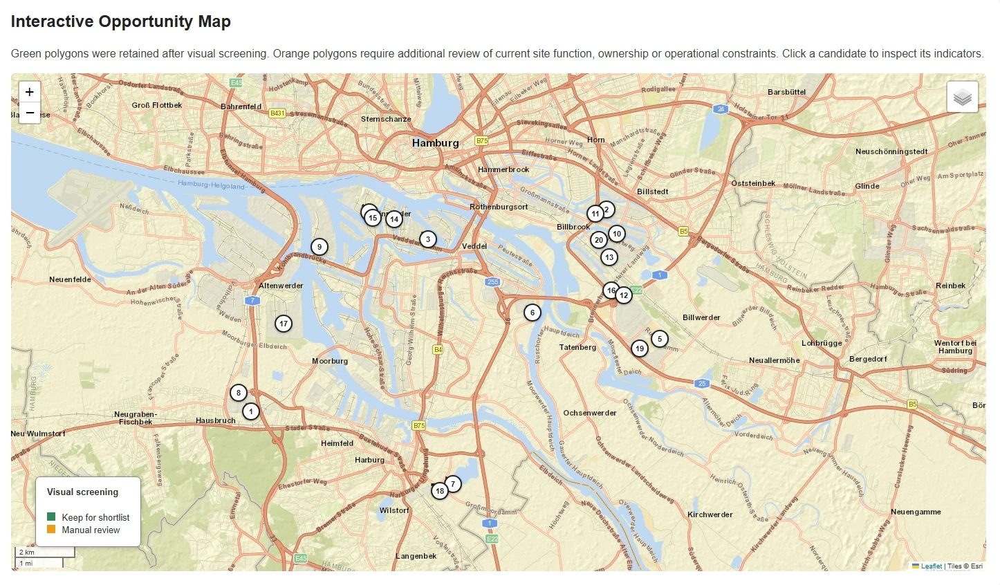

Understanding places.
Mapping possibilities.
I’m Salima. I use spatial analysis, Python and cartography to explore urban green space, environmental patterns and opportunities for greener cities.

Two questions.
One city.
Independent projects connecting open geospatial data with practical questions about Hamburg’s urban environment.

Where could Hamburg
become greener?
Connecting park proximity, vegetation greenness and surface temperature to identify areas for further investigation.
632 priority cells · 76.4% remain shortlisted under alternative weights.
Read the case study →
From parking lots
to possibilities.
Screening surface-parking sites using green-space need, heat, site size, surrounding development, transit and land values.
5,436 candidates assessed → a geographically diversified shortlist of 20.
Read the case study →From data
to a clearer map.
I’m a student based in Germany, developing my GIS and Python practice through applied geospatial projects.
My focus is on making spatial analysis understandable: preparing data carefully, choosing transparent methods, checking results and communicating what a map can—and cannot—tell us.
Spatial analysis
Buffer analysis, proximity measures, spatial joins, geometry validation and multi-criteria screening.
Python & data
GeoPandas, pandas, NumPy, Rasterio, Shapely and documented Jupyter workflows.
Remote sensing
Landsat quality masking, NDVI, land surface temperature and grid aggregation.
Communication
QGIS layouts, Matplotlib figures, Folium maps and clearly stated limitations.
Interested in my work?
I’m interested in student and entry-level opportunities involving GIS, geospatial data and environmental analysis.